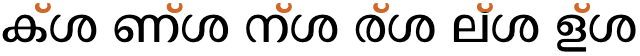
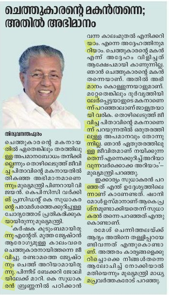

This page gathers basic information about the Malayalam script and its use for the Malayalam language. It aims (generally) to provide an overview of the orthography and typographic features, and (specifically) to advise how to write Malayalam using Unicode.
See also the companion document, Malayalam character notes, for detailed information about specific Unicode characters.
Phonetic transcriptions on this page should be treated as an approximate guide, only. Many are more phonemic than phonetic, and there may be variations depending on the source of the transcription.
വകുപ്പ് 2. ജാതി, മതം, നിറം, ഭാഷ, സ്ത്രീപുരുഷഭേദം, രാഷ്ട്രീയാഭിപ്രായം സ്വത്ത്, കുലം എന്നിവയെ കണക്കാക്കാതെ ഈ പ്രഖ്യാപനത്തില് പറയുന്ന അവകാശങ്ങള്ക്കും സ്വാതന്ത്ര്യത്തിനും സര്വ്വജനങ്ങളും അര്ഹരാണ്. രാഷ്ട്രീയ സ്ഥിതിയെ അടിസ്ഥാനമാക്കി (സ്വതന്ത്രമോ, പരിമിത ഭരണാധികാരത്തോടു കൂടിയതോ ഏതായാലും വേണ്ടതില്ല) ഈ പ്രഖ്യാപനത്തിലെ അവകാശങ്ങളെ സംബന്ധിച്ചേടത്തോളം യാതൊരു വ്യത്യാസവും യാതൊരാളോടും കാണിക്കാന് പാടുള്ളതല്ല.
Usage & history
Malayalam script is used to write the Malayalam language of Kerala state, and spoken by 35 million people including the diaspora, and the script is used for another 10 minority languages, according to the Ethnologue. It is also widely used for writing Sanskrit texts in Kerala.
മലയാളലിപിmlyāɭlipimələjɑːɭə lɪpɪMalayalam script
Originally descended from Bhrami, the Malayalam script is a Vatteluttu alphabet extended with symbols from the Grantha alphabet to represent Indo-Aryan loanwords. Throughout its history, it has absorbed words from Tamil, Sanskrit, Arabic, and English.
In the 1970s and 1980s, Malayalam underwent orthographic reform due to printing difficulties. A significant change involved the introduction of a visible virama (chandrakkala) rather than conjunct forms, and simplification of a number of forms, including consonant plus -u/-uu combinations.
The script is an abugida. Consonants carry an inherent vowel which can be modified by appending vowel-signs to the consonant. See the table to the right for a brief overview of features for the modern Malayalam orthography.
The Malayalam script was significantly simplified at the beginning of the 1970s. Prior to the orthographic reform there were many more ligated forms. In particular, the vowels u/ū and r in 2nd position in a consonant were reduced from ligated forms to simple, unchanging glyphs alongside a consonant.
Generally, words are separated by spaces, however the number of characters between spaces can be quite high as sometimes spaces are used to indicate phonological pauses, rather than lexical boundaries.
Malayalam uses 36 basic consonant letters.
Consonant clusters are typically indicated in modern Malayalam using the visible chandrakkala mark (virama), which indicates that no vowel follows a consonant. Conjunct forms are also expressed using stacked consonants, and conjoined consonants, where the chandrakkala is still used but hidden, and special chillu shapes.
As part of a cluster, RA has special forms. As a medial consonant in the modern orthography it appears as a simple glyph to the left of the letters spoken before it. When initial in the cluster its glyph includes a cillu hook at the top right. There are also special rules involving clusters of multiple RA letters.
Syllable-final consonant sounds may be represented by 2 dedicated combining marks (anusvara & visarga), but are generally ordinary consonants with chandrakkala, or 6 chillu forms. The word-final virama sometimes represents a half-u sound, rather than completely killing the inherent vowel. Because of this, Malayalam uses a set of syllable-final consonants called chillus that have no vowel sound associated with them.
The Malayalam orthography has an inherent vowel, and represents other vowels using 12 vowel-signs, including 3 prescripts and 3 circumgraphs. All circumgraphs can be decomposed. All vowel-signs are combining marks, and are stored after the base character. Also a word-final half-u sound is written in modern Malayalam using ് [U+0D4D MALAYALAM SIGN VIRAMA] (candrakkala).
There are 12 independent vowels, one for each vowel sound, including the inherent vowel, and these are used to write all standalone vowel sounds.
The only composite vowels are those created by decomposition of the circumgraphs, and involve 2 glyphs, one on each side of the base consonant(s).
There is also a set of vocalics.
There is an archaic set of numbers that include digits beyond the normal 0-9 range, and include a number of fractional symbols.
Click on the sound groups to see where else in the document each of the sounds are referred to.
Phones in a lighter colour are non-native or allophones. Source Wikipedia.
Vowel sounds
Plain vowels
Diphthongs
Consonant sounds
labial
dental
alveolar
post-
alveolar
retroflex
palatal
velar
glottal
stop
pb pʰbʰ
td tʰdʰ
t
ʈɖ ʈʰɖʰ
kɡ kʰɡʰ
affricate
t͡ʃd͡ʒ t͡ʃʰd͡ʒʰ
fricative
f
s
ɕ
ʂ
h
nasal
m
n̪
n
ɳ
ɲ
ŋ
approximant
ʋ
l
ɻɭ
j
trill/flap
ɾ
ɽ
Vowels
Inherent vowel
a following a consonant is not written, but is seen as an inherent part of the consonant letter, so ka is written by simply using the consonant letter ക [U+0D15 MALAYALAM LETTER KA].
Vowel absence & half-u
Malayalam uses ് [U+0D4D MALAYALAM SIGN VIRAMA] (in Malayalam called ചന്ദ്രക്കലcn͓d͓rk͓kl (candrakkala)ʧand̪r̪akkala) to kill the inherent vowel after a consonant, eg. the following explicitly represents just the sound k ക്k͓
However, in modern text, at the end of a word the combination ക്k͓ may also represent the sound kə̆ or kɨ̆ (depending on dialect). The transcription for this is usually ŭ, and it is called half-u.
In older documents the half-u was typically written with a u vowel-sign plus chandrakkala, which is not ambiguous, eg. പാലു്
The Unicode Standard provides examples of half-u occurring in positions that are not word-final (that is, not immediately before a space), eg. ഐശീല്ം In another example, the chandrakkala is attached to an independent vowel letter, and overrides the sound of that letter, eg. എ്ന്നാ
The chandrakkala is always written after any vowel-sign and before any final consonant (such as anusvara).
See also clusters, where the chandrakkala can be hidden between consonant clusters, and finals.
An orthography that uses vowel-signs is different from one that uses simple diacritics or letters for vowels, in that the vowel-signs are generally attached to the syllable, rather than just applied to the letter of the immediately preceding consonant. This means that pre-base vowel-signs and the left glyph of circumgraphs appears before a whole consonant cluster if it is rendered as a conjunct (see prescript_vowels).
Malayalam vowel-signs are all combining characters. In principle a single Unicode character is used per base consonant, even if the vowel-signs appear on both sides of the base consonant, but 3 vowel signs decompose to more than one character. See also circumgraphs. All vowel-signs are typed and stored after the base consonant, and the glyph rendering system takes care of the positioning at display time.
All of the vowel-signs are spacing marks, meaning that they consume horizontal space when added to a base consonant.
Vowel-signs may also be attached to digits,u,505 eg. 355ാം
Malayalam uses the following dedicated combining marks for vowels.
ി␣ീ␣ു␣ൂ␣െ␣േ␣ൊ␣ോ␣ാ␣ ␣ൈ␣ൗ␣ൌ
The u and ū vowel-signs, and to some extent the i and ī signs, tend to form ligatures with the base consonant. See vowelligation.
Pre-base vowel-signs
െ␣േ␣ ␣ൈ
Three vowel-signs appear to the left of the base consonant letter or cluster, eg. കെkeke
These are combining marks that are always stored after the base consonant. The font places the glyph before the base consonant.
These vowel-signs are placed before the start of the syllable. This means that a word with a consonant cluster at the start separates the pre-base vowel from the position where it is pronounced by more than one consonant character, eg.
ഇദ്ദേഹം
However, that if the cluster is split by a visible virama, this creates two syllables and the pre-base vowel-sign appears after the consonant with the virama. If you click on the example below, you'll see that the characters and code point orders are the same as for the previous example (apart from the addition of the ZWNJ to force the virama to appear), but the location of the pre-base vowel-sign is now immediately before the consonant after which it is pronounced.
ഇദ്ദേഹം
Circumgraphs
ൊ␣ോ␣ ␣ൌ
Three vowels are produced by a single combining character with visually separate parts, that appear on opposite sides of the consonant onset eg. കൊkeākoː
The single code point per vowel-sign is required by the Unicode Standard u,501, however the parts are separated in Unicode Normalisation Form D (NFD).
Whichever approach is used, the vowel-signs must be typed and stored after the consonant characters they surround, and in left to right order. In the case of decomposed vowel-signs, the order is also important and must be as shown above.
Standalone vowels
Malayalam represents standalone vowels using a set of independent vowel letters. The set includes a character to represent the inherent vowel sound.
Ligated forms of consonant plus -u (top) and -ū (bottom). The far left shows ordinary forms.
During orthographic reforms in the 1970s and 1980s a simpler approached was introduced, to make printing easier. Both vowels were represented by an unchanging, postscript vowel-sign as shown below. No change is needed to the underlying code points in Unicode, this is purely a font difference.
Words ending with chandrakkala may be pronounced with a half-u sound after. In order to indicate a consonant with no following vowel sound at all the following chillu (or cillakṣaram) characters can be used, eg. വില്ലൻ
In older Unicode text the first 5 chillus in the list above were written using the combination consonant+VIRAMA+ZWJ, but since the introduction of the chillu characters in Unicode v5.1 these precomposed characters are recommended.
Anusvara & visarga
ം␣ഃ
Malayalam also uses the anusvara and visarga as syllable-final characters, eg. ദുഃഖം
The anusvara normally represents the sound m, but may be assimilated to another nasal consonant. It can be used multiple times after a vowel,u,504 eg. ഈംംംംị̄m̽m̽m̽m̽
Consonant clusters
The absence of a vowel sound between two or more consonants is visually indicated in one of the following ways.
A visible chandrakkala character above the top right of the initial consonant.
Stacked consonants, where the non-initial consonant appears below the initial, usually with a reduced or ligated form.
Conjoined consonants, where consonants sit side-by-side but with some ligation or different forms than usual.
Special 'chillu' shapes for the initial consonant (a special case of the preceding bullet point).
A syllable-final consonant diacritic followed by a regular consonant.
In Unicode, the stacking and conjoining behaviour is achieved by adding ് [U+0D4D MALAYALAM SIGN VIRAMA] between the consonants. The font hides the glyph automatically.
Traditional fonts have more ligatures than modern ones. There doesn't appear to much in the way of a systematic
approach to shaping. With a few exceptions, the conjuncts are specific to particular pairs of characters.
You can see conjunct forms in the conjunct map table. This shows all combinations of two consonants and allows you to observe the effect of changing the font. Versions of the table with conjuncts highlighted are available for Noto Serif Malayalam and Thoolika Traditional Unicode (part 1),
(part 2). The number of conjuncts is 135 and 219+156, respectively. The split for the Thoolika font is stacked, etc in part 1, and using chillu shapes in part 2.
Sequences involving more than two consonants in a cluster can combine a variety of methods. The example in to_india shows 3 conjoined consonants in the middle, and a conjoined cluster stacked below another letter at the end.
The word ഇന്ത്യയ്ക്ക്ịn͓t͓yy͓k͓k͓to India in the Thoolika Traditional Unicode font.
ര [U+0D30 MALAYALAM LETTER RA] when non-initial in a cluster is displayed to the left of the other consonant(s) in the reformed orthography, eg. ക്രk͓rThis transposition is done by the font – the typed and stored order remains the same as the spoken order.
When RA follows more than one consonant, it is displayed to the left of the cluster, not just to the left of the preceding consonant, eg. ന്ദ്രn͓d͓r in ചന്ദ്രക്കലcn͓d͓rk͓klʧand̪r̪akkala
Visible chandrakkala
This is a common option, and was promoted as the default by the orthogrpahic reforms of the 1970s. It is also the fallback if the font doesn't contain conjunct forms for a particular cluster of consonants.
Examples include ട്ഛʈ͓cʰക്റk͓ṙ
Stacking
The non-initial consonant is drawn below the initial consonant, and with a slightly different shape.
The following list shows stacked conjuncts in the Noto Serif Malayalam font (unless you changed the font for examples on this page).
Stacks tend to be particularly common for geminated consonants, even when those consonants don't participate in other conjunct pairings. In 3 such cases, the second consonant is often represented by a small triangle.
Otherwise, the subjoined consonant may be a reduced version of the original, or may be ligated. Note that LA has a very different shape from normal when in subjoined position.
Conjoined consonants
Conjuncts where the consonants remain side-by-side typically merge the shapes of the consonants.
The isolated, prescript shape for RA was introduced by the reformed orthography. In the old orthography RA as the second element in a conjunct was represented by a ligated swash below the initial consonant.
Examples of consonant+RA ligatures in the old orthography.
The following list shows conjoined conjuncts in the Noto Serif Malayalam font (unless you changed the font for examples on this page). To see the original shapes, click on the conjunct.
In some fonts the initial consonant in a cluster may take a chillu shape, followed by an ordinary glyph for the second character.
In the Thoolika Traditional Unicode font this applies to the following consonants in initial position. The examples all use SHA in the second position. Note that the chillu code points are not used here – this is just font styling on normal consonants.
ക␣ണ␣ന␣ര␣ല␣ള
conjunct_chillus shows the same sequence of characters in the Thoolika Traditional Unicode font. Note how the shape of the second consonant remains the same as normal - there is no ligation or repositioning.
 Chillu-style initials used in a modern font (top) and traditional font (bottom) for consonant clusters.
Before the 1970s, however, a dot or small vertical stroke was used over the following consonant, in a similar way to the repha in other indic scripts, eg. ൎയ The character ൎ [U+0D4E MALAYALAM LETTER DOT REPH] is used to reproduce this.
This character is not a combining character. It is typed and stored in the same place as you would expect to find the RA + VIRAMA, and then the font needs to position the glyph over the following consonant.
The same word could be spelled പാററpāṙṙ and until the 1960s, when the stacked version began to appear, it would have been spelled that way, but this would be ambiguous,u,506 cf. ടെംപററി It would be particularly ambiguous when there are more than 2 RRA characters side by side, eg. compare കിലോമീറ്ററുകൾ with കിലോമീറററുകൾkilōmīṙṙṙukɭ̽
If a word with the sound tt is spelled using an unstacked pair of these characters, the pair acts as a single unit with prescript vowels, eg. മാറെറാലി To achieve the correct positioning of vowel-signs here, however, it is necessary to use the decomposed forms of the vowel (see the transcription). Otherwise you would end up with മാററൊലിmāṙṙoli where the prescript part of the vowel is in the wrong place.
Similarly, ൻ്റn͓̽ṙ is always pronounced nta, eg. ആൻ്റോ
According to the Unicode Standard, an alternative spelling exists without the stack, ie. ആൻേറാận̽ēṙāaːntoː (note that again we had to split the vowel), but this can also lead to ambiguity.u,506
Numbers, dates, currency, etc
Digits
There is a set of Malayalam digits, but they are not use for modern texts.
൦␣൧␣൨␣൩␣൪␣൫␣൬␣൭␣൮␣൯
Older texts also used the following additional numeric characters.
This section brings together information about the following topics:
writing styles;
cursive text;
context-based shaping;
context-based positioning;
baselines, line height, etc.;
font styles;
case & other character transforms.
The orthography has no case distinction, and no special transforms are needed to convert between characters.
Context-based shaping
Malayalam is not cursive, but d isplay technology needs to provide shaping for conjunct formation.
Context-based positioning
Display technology must correctly position prescript vowels to the left of the consonant or consonant cluster, and place the separate glyphs of 2-part vowels around those also.
It must do a similar thing for display of RA using the orthographic reforms.
Explicit shaping controls
Assuming that you have fonts that produce the expected behaviours, the Unicode Standard describes the use of the joiner characters as follows:u,505
Uses of ZWNJ (zero-width non-joiner) in Malayalam.
U+200D ZERO WIDTH JOINER (ZWJ) can be used before the chandrakkala to produce a traditional conjunct form in fonts that produce the open form by default but have the glyphs for the traditional forms too.
Spaces are often used between words, but it is not uncommon for writers to use spacing to indicate phonological pauses, rather than lexical boundaries.ws
Sequences of characters between spaces are often quite long in Malayalam, eg. അറിയപ്പെടുന്നുവെങ്കിലുംạ̄ṙiyp͓peʈun͓nuʋeŋ͓kilum̽
Spaces provide the main line break opportunities, however Malayalam is an agglutinative language and Malayalam words can be long. This can lead to large gaps during justification, and sometimes words that are longer than the available column width, so it is desirable to also hyphenate words..
Because of the length of Malayalam words, hyphenation is very common and needed during layout, especially in narrow columns, such as newsprint.
Hyphenation mostly takes place at syllable boundaries, however there are also occasional exceptions and special cases. Usually, no visual marker is associated with hyphenated text.st

Text from the Malayalam newpaper, Deshabhimani, showing hyphenated words with yellow highlighting.
Text alignment & justification
tbd
Letter spacing
tbd
Counters, lists, etc.
You can experiment with counter styles using the Counter styles converter. Patterns for using these styles in CSS can be found in Ready-made Counter Styles, and we use the names of those patterns here to refer to the various styles.
The modern Malayalam orthography uses a native numeric style.
Numeric
The malayalam numeric style is decimal-based and uses these digits.rmcs
൧␣൨␣൩␣൪␣൫␣൬␣൭␣൮␣൯␣൦
Examples:
൧␣൨␣൩␣൪␣൧൧␣൨൨␣൩൩␣൪൪␣൧൧൧␣൨൨൨␣൩൩൩␣൪൪൪
Prefixes and suffixes
Malayalam commonly uses a full stop + space as a suffix.
Examples:
൧. ൨. ൩. ൪. ൬.
Separator for Malayalam list counters: full stop + space.
Styling initials
tbd
Page & book layout
This section is for any features that are specific to Malayalam and that relate to the following topics:
general page layout & progression;
grids & tables;
notes, footnotes, etc;
forms & user interaction;
page numbering, running headers, etc.
Languages using the Malayalam script
According to ScriptSource, the Malayalam script is used for the following languages: